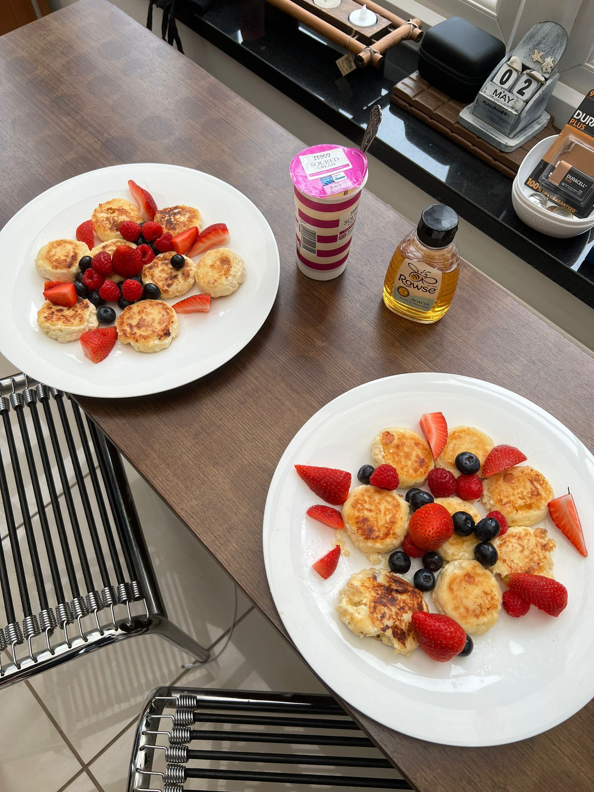

My Favorite Food
Recently I have been obsessing with Cheese pankaces or "Syrnyky". The picture below is the pancakes I made last weekend. On this site you can find a recepie and places in Londong where you can try them.

Recently I have been obsessing with Cheese pankaces or "Syrnyky". The picture below is the pancakes I made last weekend. On this site you can find a recepie and places in Londong where you can try them.